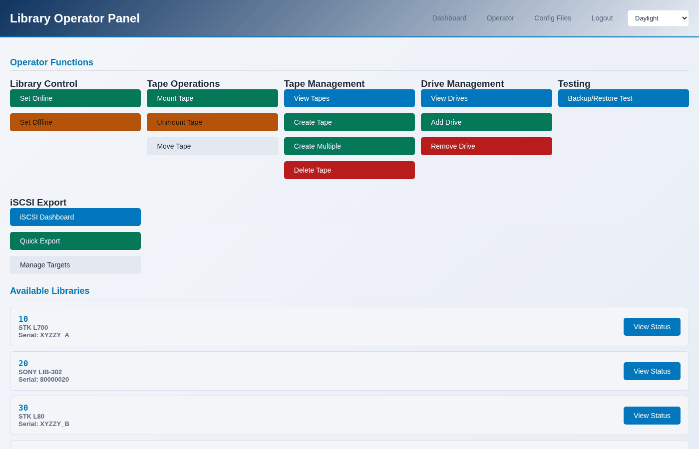

Finding your way around
Five places, and which one you want.
The header
Every page carries the same header: Dashboard, Libraries, Operator, Console, Logout, and the theme picker.
Dashboard
/auth/dashboard/ - the overview. How many libraries there are, how many
are running, what the host is, and links into everything else.
Libraries
/libraries/list/ - every library, from MHVTL’s own configuration. Each
card has its id, model, serial, and buttons for the things done most often.
Clicking one opens The library page, which is the hub for a single library: what it is, what its drives are doing, what tapes it holds, and links to every action, with the library already chosen.
Operator
/libraries/operator/ - the panel for tape work across libraries: mount,
unmount, move, create tapes, the inventory, add and remove drives, bring a
library online or offline.
{kind=link}

Every page here has a library picker at the top. Arriving from a library page sets it for you.
Console
/libraries/console/ - the host rather than the libraries. Six pages:
Page |
What it shows |
|---|---|
Console |
System facts, MHVTL services, kernel modules, SCSI device count |
Logs |
An allowlisted set of logs, tailed |
Services |
Every MHVTL unit: the target, the libraries, the drives |
Devices |
What the kernel sees: changers and drives, with their /dev nodes |
Modules |
Kernel module state, including the ones iSCSI needs |
Disk |
Space where the configuration and the tape files live |
See The system console.
Themes
Four, from the picker in the header: Console Navy, Graphite, Daylight and Sepia. The choice is remembered in your browser, and applies to every page.
Two of them are light and two are dark; nothing else changes.
The command line
mhvtl covers the same ground, arranged as nouns and verbs:
Noun |
What it is for |
|---|---|
|
list, show, create, delete, slots, orphans, next-id |
|
list, show, add, remove |
|
list, media, slots, create, bulk, adopt, delete, next-barcode |
|
library, drive, activity, system, dashboard |
|
start, stop, restart, status |
|
status, targets, export, target, lun, acl, portal, remap |
|
list, show, validate, export, backup, restore, sync |
|
logs, modules, disk, system |
|
devices, map |
Every command takes --json for a machine-readable answer, and --help
at any level:
$ sudo mhvtl tape --help
$ sudo mhvtl tape create --help